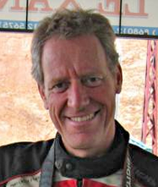

Født 06.08.1942 i København
Nina Rasmussen, eventyrer, forfatter og foredragsholder, har rejst i rundt i hele verden,og søgt udfordringer og nye oplevelser, først med familien påmotorcykler til Sydamerika, Indonesien, Malaysia, Papua Ny giunea, og australien. Bagefter i det nu historiske Sovjet, og Afrika.
Senere har hun rejst i 2CV til Himalaya ,sammen med Hjalte Tin og to af familiens venner.
Bagefter gik turen til Afghanistan. Hun har også rejst alene i Albanien, Iran og Jemen.
Straks efter Saddam Hosseins fald kørte Nina og Hjalte til i Iraq og Kurdistan.
Som den ægte globetrotter hun er har hun også rejst på kamel i Rajastan, malet i Giunea Bisau, været turist i Goa, på Burning Man Festival, og pigetur i USA sammen med datteren Ida Tin og en flok kvindelige Harleykørere.
Næsten alle lande i den islamiske verden er blevet besøgt, og hun har deltaget i muslimernes store pilgrimsrejse til Mekka.
Den sidste rejse gik alene til det eventyrlige Jemen i Carsten Niebuhrs fodspor. Mere end 70 lande er det blevet til i tidens løb, og 10 bøger, fem af dem skrevet sammen med livsledsageren Hjalte Tin

1953, born in Copenhagen.
EDUCATION
1972, began studies at Roskilde University Centre in its first year of existence.
1975, son Emil was born.
1978, received the first Schoolarship to be awarded at Roskilde University Centre.
1979, daughter Ida was born.
1979, MA in History and Political Science, Roskilde University Centre.
1998, PhD, Århus University
BOOKS
1983, “Held og Lykke. På motorcykel med Emil og Ida gennem Sydamerika”. med Nina Rasmussen, Gyldendal
1986, “Sommer hele Året. Med Emil og Ida i det vilde østen” med Nina Rasmussen, Gyldendal
1987, “At rejse. Rrejsehåndbogen til hele verden” Høst og Søn
1989, “Hos Fremmede Venner. På motorcykel gennem Sovjet” med Nina Rasmussen, Gyldendal
1993, “Fra Cape til Cairo. På motorcykel gennem Afrika” med Nina Rasmussen, Gyldendal
2003, “Hjælp!”, Rosinante (analysis of Danish emergency aid)
2004, “Rejsen til landet der ikke findes” (Kurdistan) med Nina Rasmussen, Rosinante
ACTIVITIES
1974-79, participating in organizing, writing, directing, and producing street and stage- theatre with the theatre-group “Solvognen”
1980-1989
1980-81, motorcycle journey with Nina Rasmussen and our children Emil and Ida from Los Angeles til Rio de Janeiro. Countries visited included Mexico, Guatemala, El Salvador, Nicaragua, Colombia, Peru, Bolivia and Brazil.
1984-85, motorcycle journey with Nina Rasmussen and our children Emil and Ida from Singapore to Sydney. Countries included Malaysia, Timor, Irian Jaya, Papua New Guinea, and Australia.
1988, motorcycle journey with Nina Rasmussen and our children Emil and Ida from Leningrad to Ulan Ude. Areas visited included Estonia, Ukraine, Moldavia, Abkhasia, Georgia, Armenia, Nagorny Karabakh, Azerbajdsjan, Uzbekistan, Tadsjikistan, Kazakstan, and Burjatia.
1990-1999
1990-1991, designed and built low-energy house in Mørke outside Århus with Nina Rasmussen.
1992, motorcycle journey with Nina Rasmussen and our children Emil and Ida from Cape to Cairo. Countries visited included Lesotho, South Africa, Namibia, Angola, Zaire, Uganda, Kenya, Ethiopia, Eritrea, Sudan and Egypt.
1994, associated with Centre for Cultural Research, Århus University.
1995, began PhD research on civil war at the Centre for Cultural Research.
1995, fieldwork in Cape Town, April.
1995, organized the first South Africa Discussion Day, at Århus University with the theme “The Truth and Reconciliation Commision”, Dec 5. Key speaker was André du Toit from University of Cape Town.
1996, six months fieldwork in South Africa for phd-thesis on violence and civil war, Cape Town, Johannesburg, Pretoria, Durban, Fort Hare. Associated with the Political Studies Department, University of Cape Town.
1996, organized the second South Africa Discussion Day at Århus University. The theme was “European Ethnicity outside Europe” Key speaker was Prof.. Simon Bekker from University of Stellenbosch.
1994-96, articles on war, ecology, north-south relations, in Danish and Norwegian newspapers including Weekendavisen, Politiken, Information, Jyllandsposten, Orientering DR P1, and Morgenbladet.
1995-97, lecturing at the European Studies Programme at Århus University.
1998, submitting PhD-thesis at University of Aarhus
1998, Commisssioned by the the Danish Council for Development Research to assess the impact of Danish humanitarian assistance in complex emergencies. Associated with Danish Institute of International Affairs, Copenhagen, and Centre for European Cultural Studies, University of Aarhus.
1998, Nov. to Dec; field studies in Somalia and Somaliland.
1999, July to Nov, field studies in Pakistan, Ladakh and Afghanistan with Nina Rasmussen
2000-2009
2000, Jan. to Feb. teaching a course in European history at the Danish School of Journalism, Aarhus.
2000, April, field studies in Albania and Kosovo with Nina Rasmussen
2000, Sep-Dec field studies in Guinea-Bissau on humanitarian aid in civil war context
2001, Mar-May, field studies in Guinea-Bissau
associated with Centre for Development Research, Copenhagen
2002, teaching at the Kaospilot school, Aarhus.
2003, travels in Iraq, Syria and Turkey with Nina Rasmussen
2004, weekly column in daily Information.
2005, travels in Cuba, literary critic at daily Politiken
2006, funded with daughter Ida Tin motorcycle-travel agency Moto Mundo, tours in Mongolia and USA
2007, Moto Mundo tours in Cuba, Vietnam, USA, Mongolia, South Africa
2008, Moto Mundo tours in Cuba, USA, Mongolia, South Africa, Chile
2009, Moto Mundo tours in Cuba, USA, Morocco
2010
2010, Moto Mundo tour in Cuba
2010, Moto Mundo Electric World Tour begins
Member of Adventurers Club, Copenhagen